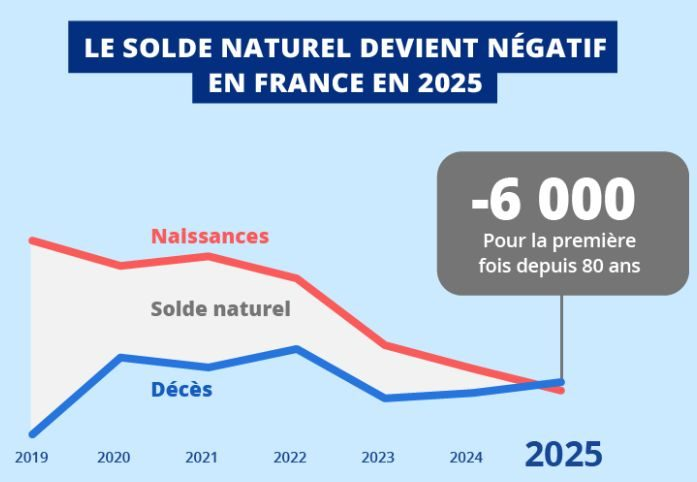

Début 2025, l'Insee a publié un graphique qui marque un tournant historique : le solde naturel devient négatif en France (plus de décès que de naissances), une première depuis plus de 80 ans. Ce n'est pas un phénomène conjoncturel, mais une tendance structurelle.
Les faits
- La natalité recule continuellement depuis plus de 10 ans
- Le taux de fécondité est durablement inférieur au seuil de renouvellement des générations
- Les plus de 60 ans sont désormais plus nombreux que les moins de 20 ans
- Le ratio actifs/retraités se dégrade mécaniquement (source : Conseil d'orientation des retraites)
Pourquoi c'est un enjeu patrimonial majeur
Le système français de retraite repose sur un principe simple : les actifs financent les pensions des retraités. Moins d'actifs demain, plus de retraités plus longtemps — la pression financière augmente et les ajustements deviennent inévitables : âge de départ, durée de cotisation, niveau des pensions.
Les analyses de la Cour des comptes et de l'OCDE convergent : la répartition ne disparaîtra pas, mais elle ne suffira plus, à elle seule, à maintenir le niveau de vie à la retraite.
La conclusion patrimoniale
La retraite par répartition devient un socle, pas une solution complète. Préparer une retraite complémentaire par capitalisation n'est plus une option, mais une nécessité pour sécuriser son avenir.
Anticipez dès maintenant
Je peux vous aider à construire votre stratégie de retraite complémentaire. Premier rendez-vous gratuit.
Prendre rendez-vous